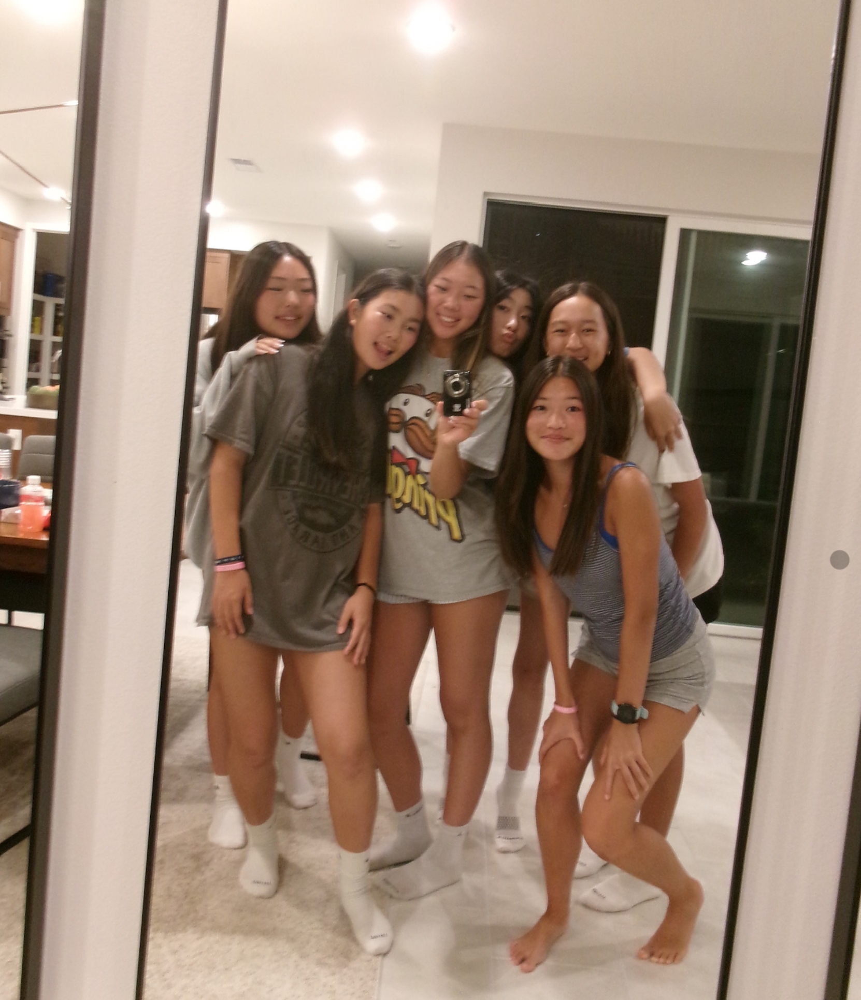
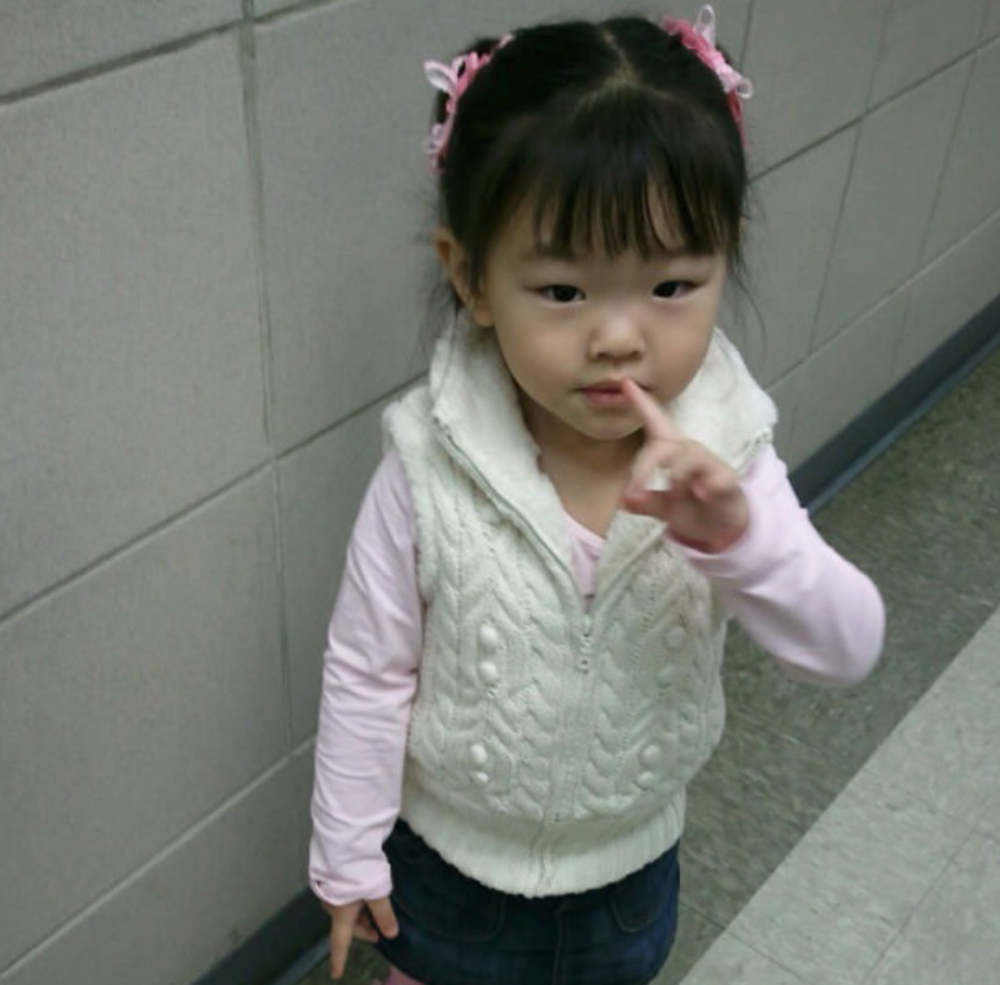

My name is Olivia Kim, and I am a 10th grade student at Canyon Crest Academy. To describe myself, I would say I am an empathetic and a hard worker. I think that a person is defined by not only the things that they do, but the values they hold. Qualities such as compassion, dedicated work ethic, patience, and selflessness guide the way I communicate with others and make decisions. Having written traits helps me envision the person I try to be and provides an outline of personal growth I can achieve. I hope to incorporate these values into a future in the business field.

I try to be mindful of my actions, ensuring they align with my values. An example of when I apply my values in real-life situations is during the summer when I work as a volunteer at my church VBS program. Oftentimes, I get overwhelmed by the chaotic nature of VBS, being surrounded by dozens of small children. I find myself agonizing over small details such as operating exactly by the schedule, constantly counting the kids, and making sure everyone is getting along. While being mindful of these things is important, worrying excessively only brings me stress and dread for the next shift. However, I have picked up the ability to assess the situation with patience and work through problems accordingly instead of submitting to my frusturations. This way, I maintain a positive and calm composure, creating a better environment for both myself and the children.Using the said traits that I try to shape myself into, I hope to create an impactful future in business. In the business world, particularly marketing and business administration/management, the focus is very people-oriented. Thus, it is vital to work cooperatively and selflessly. Recognizing my inherent extroversion and eagerness to work with others, I believe that I can work toward a meaningful future in this category. However, I acknowledge that a successful career is attained through hard work, passion, and dedication, and not just hope and virtue alone. Currently, I hope to refine my skills in marketing while competing in DECA as part of CCA's chapter.